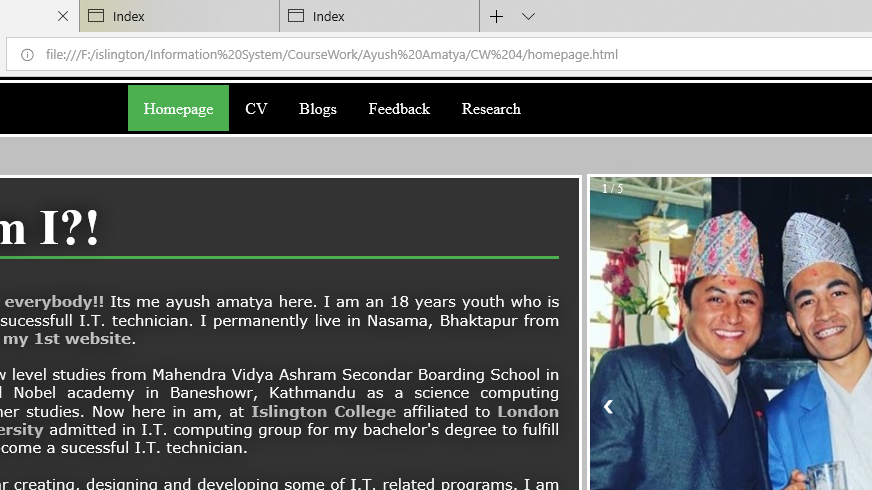
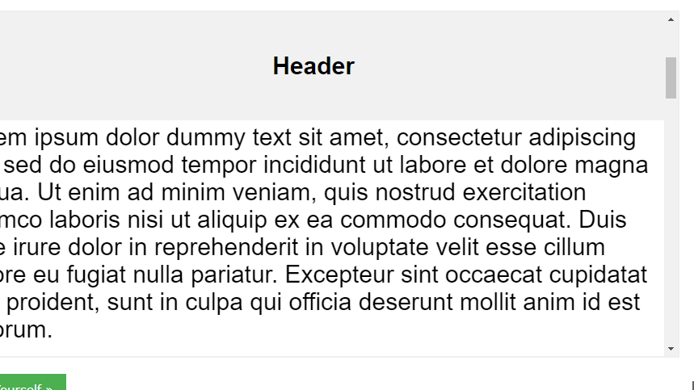

Research:
In order to complete my 1st website, i researched lots of places about the effectives ways to create a complete websie. I took help from many online teacher, online tutor, friends and relatives. Some of the webpages and websites that i reviewed to complete the design of this website are as follows:
1) Header (www.Facebook.com:)
I took the reference of facebook to design the header of my website.
Screenshot of MY website.
Screenshot of REFERENCE website.
2) Gallery (www.W3School.com):
I searched w3school to add a manual photo gallery to my website.
Screenshot of MY website.
Screenshot of REFERENCE website.
3) Scroll Effet (www.W3School.com:)
I searched w3school to add a manual photo gallery to my website.
Screenshot of MY website BEFORE scroll.

Screenshot of MY website AFTER scroll.
Screenshot of REFERENCE website BEFORE scroll.

Screenshot of REFERENCE website AFTER scroll.
4) CV (www.zety.com):
I searched zety.com to find some good desingn of a CV for my website.
Screenshot of MY website.
Screenshot of REFERENCE website.
5) Social Media (www.W3School.com):
I searched w3school to gain the knowledge about social media buttons for my website.
Screenshot of MY website.
Screenshot of REFERENCE website.
Find ME: